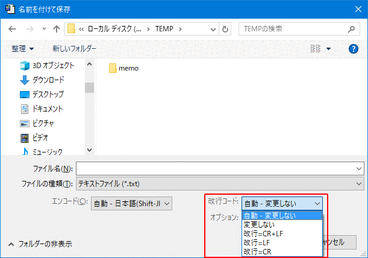
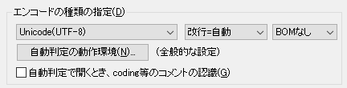
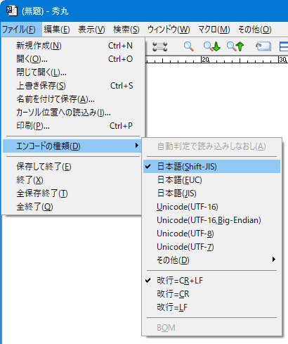
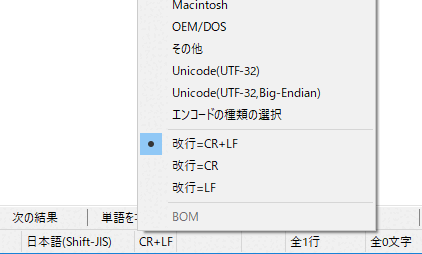

[HME0098A]
●ファイルの改行コードを変更したい

- 編集中のファイルで、改行コードを変更したいのですが？

-
秀丸エディタで改行コードを変更するにはいくつか方法があります。
ファイル保存時にダイアログで指定する。(設定によりダイアログの種類が多少変わります。画像は Windows Vistaタイプ)

「名前を付けて保存」の場合、「ファイルタイプ別の設定」にある、「その他」-「保存・読込み」の「エンコードの種類の指定」で設定した内容が適用されます。 (既存のファイルを開いて、上書き保存した場合には、エンコード、改行、BOMの有無は変更されない)

「ファイル」メニュー「エンコードの種類」から改行コードを指定する。

ステータスバーに「エンコードの種類」か「改行コードの種類」を表示している場合は、その場所をクリックするとメニューが表示され、そこからも「改行コードの種類」を変更可能です。

メニューやステータスバーから改行コードを変更した場合は、保存するまでファイル自体の改行コードは変更されません。必ず保存してください。(改行コードを変更すると更新扱いになります)